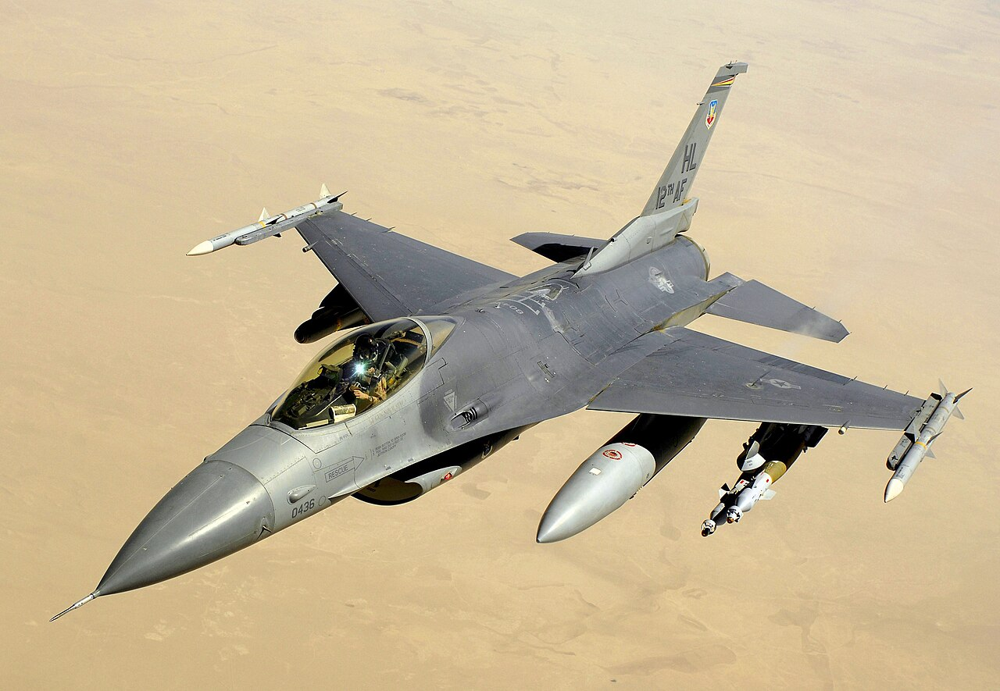

الارتفاع (قدم)0
رمز الإرسال—
داخل القمرة (رسم توضيحي، بلا تفاصيل مروعة)
بيان النائب العام الإماراتي · 9 أكتوبر 2026
مخطط مدبّر لهجوم انتحاري على مبنى المسافرين في مطار بن غوريون، بهدف إيقاع أكبر عدد من الضحايا.
استُلهم المخطط من هجمات 11 سبتمبر، وأجرى رحلتين سابقتين إلى تل أبيب للتعرّف على المسار.
قال إنه تصرّف وحده، والتحقيق مستمر للتحقق من احتمال وجود آخرين.
قال النائب العام إن إجراءات التوظيف لم تكشف مؤشرات على التطرف أو على نية الهجوم.
×2 · مقطع مُسرّع

صورة توضيحية لمقاتلة F-16 من ويكيميديا كومنز (ملك عام CC0). ليست المقاتلات التي اعترضت الطائرة، وعددها غير محدد في المصادر.
المصادر: بيانات فلاي دبي (30 سبتمبر) · بيانات النائب العام الإماراتي (3 و9 أكتوبر) · تقارير CBS وCNN وAP وخليج تايمز
رحلة فلاي دبي FZ1073
30 سبتمبر 2026 · من دبي إلى تل أبيب، وهبوط في تبوك
رسوم توضيحية بحسب البيانات الرسمية والتقارير الموثوقة. ليست تصويراً حقيقياً. المسار والمواقع تقريبية.
ما لا نعرفه بعد
- هل ساعده أحد؟ (التحقيق مستمر)
- كيف اجتاز الفحص الأمني للتوظيف؟
- متى تُعلن النتائج النهائية للتحقيق؟
التفاصيل والمصادر الكاملة في صفحة الملف. الفيديو توضيحي ولا يغني عن المصادر.